Grid
Mesh reading
A Ferrite Grid can be generated with the generate_grid function. More advanced meshes can be imported with the FerriteMeshParser.jl (from Abaqus input files), or even created and translated with the Gmsh.jl and FerriteGmsh.jl package, respectively.
FerriteGmsh.jl
FerriteGmsh.jl supports all defined cells with an alias in Ferrite.jl as well as the 3D Serendipity Cell{3,20,6}. Either, a mesh is created on the fly with the gmsh API or a mesh in .msh or .geo format can be read and translated with the FerriteGmsh.togrid function.
FerriteGmsh.togrid — Function
togrid(filename::String; domain="")Open the Gmsh file filename (ie a .geo or .msh file) and return the corresponding Ferrite.Grid.
togrid(; domain="")Generate a Ferrite.Grid from the current active/open model in the Gmsh library.
FerriteGmsh supports currently the translation of cellsets and facetsets. Such sets are defined in Gmsh as PhysicalGroups of dimension dim and dim-1, respectively. In case only a part of the mesh is the domain, the domain can be specified by providing the keyword argument domain the name of the PhysicalGroups in the FerriteGmsh.togrid function.
Reading a .msh file is the advertised way, since otherwise you remesh whenever you run the code. Further, if you choose to read the grid directly from the current model of the gmsh API you get artificial nodes, which doesn't harm the FE computation, but maybe distort your sophisticated grid operations (if present). For more information, see this issue.
If you want to read another, not yet supported cell from gmsh, consider to open a PR at FerriteGmsh that extends the gmshtoferritecell dict and if needed, reorder the element nodes by dispatching FerriteGmsh.translate_elements. The reordering of nodes is necessary if the Gmsh ordering doesn't match the one from Ferrite. Gmsh ordering is documented here. For an exemplary usage of Gmsh.jl and FerriteGmsh.jl, consider the Stokes flow and Incompressible Navier-Stokes Equations via DifferentialEquations.jl example.
FerriteMeshParser.jl
FerriteMeshParser.jl converts the mesh in an Abaqus input file (.inp) to a Ferrite.Grid with its function get_ferrite_grid. The translations for most of Abaqus' standard 2d and 3d continuum elements to a Ferrite.AbstractCell are defined. Custom translations can be given as input, which can be used to import other (custom) elements or to override the default translation.
FerriteMeshParser.get_ferrite_grid — Function
function get_ferrite_grid(
filename;
meshformat=AutomaticMeshFormat(),
user_elements=Dict{String,DataType}(),
generate_facetsets=true
)Create a Ferrite.Grid by reading in the file specified by filename.
Optional arguments:
meshformat: Which format the mesh is given in, normally automatically detected by the file extensionuser_elements: Used to add extra elements not supported, might require a separate cell constructor.generate_facetsets: Should facesets be automatically generated from all nodesets?
If you are missing the translation of an Abaqus element that is equivalent to a Ferrite.AbstractCell, consider to open an issue or a pull request.
Grid datastructure
In Ferrite a Grid is a collection of Nodes and Cells and is parameterized in its physical dimensionality and cell type. Nodes are points in the physical space and can be initialized by a N-Tuple, where N corresponds to the dimensions.
n1 = Node((0.0, 0.0))Cells are defined based on the Node IDs. Hence, they collect IDs in a N-Tuple. Consider the following 2D mesh:
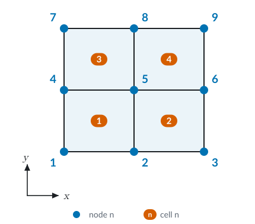

The cells of the grid can be described in the following way
cells = [ Quadrilateral((1, 2, 5, 4)), Quadrilateral((2, 3, 6, 5)), Quadrilateral((4, 5, 8, 7)), Quadrilateral((5, 6, 9, 8)),]where each Quadrilateral <: AbstractCell is defined by the tuple of node IDs. Additionally, the data structure Grid contains node-, cell-, facet-, and vertexsets. Each of these sets is defined by a Dict{String, OrderedSet}.
Node- and cellsets are represented by an OrderedSet{Int}, giving a set of node or cell ID, respectively.
Facet- and vertexsets are represented by OrderedSet{<:BoundaryIndex}, where BoundaryIndex is a FacetIndex or VertexIndex respectively. FacetIndex and VertexIndex wraps a Tuple, (global_cell_id, local_facet_id) and (global_cell_id, local_vertex_id), where the local IDs are defined according to the reference shapes, see Reference shapes.
The highlighted facets, i.e. the two edges from node ID 3 to 6 and from 6 to 9, on the right hand side of our test mesh can now be described as
boundary_facets = [(3, 6), (6, 9)]i.e. by using the node IDs of the reference shape vertices.
The first of these can be found as the 2nd facet of the 2nd cell.
julia> Ferrite.facets(Quadrilateral((2, 3, 6, 5)))((2, 3), (3, 6), (6, 5), (5, 2))The unique representation of an entity is given by the sorted version of this tuple. While we could use this information to construct a facet set, Ferrite can construct this set by filtering based on the coordinates, using addfacetset!.
AbstractGrid
It can be very useful to use a grid type for a certain special case, e.g. mixed cell types, adaptivity, IGA, etc. In order to define your own <: AbstractGrid you need to fulfill the AbstractGrid interface. In case that certain structures are preserved from the Ferrite.Grid type, you don't need to dispatch on your own type, but rather rely on the fallback AbstractGrid dispatch.
Example
As a starting point, we choose a minimal working example from the test suite:
struct SmallGrid{dim, N, C <: Ferrite.AbstractCell} <: Ferrite.AbstractGrid{dim} nodes_test::Vector{NTuple{dim, Float64}} cells_test::NTuple{N, C}endHere, the names of the fields as well as their underlying datastructure changed compared to the Grid type. This would lead to the fact, that any usage with the utility functions and DoF management will not work. So, we need to feed into the interface how to handle this subtyped datastructure. We start with the utility functions that are associated with the cells of the grid:
Ferrite.getcells(grid::SmallGrid) = grid.cells_testFerrite.getcells(grid::SmallGrid, v::Union{Int, Vector{Int}}) = grid.cells_test[v]Ferrite.getncells(grid::SmallGrid{dim, N}) where {dim, N} = NFerrite.getcelltype(grid::SmallGrid) = eltype(grid.cells_test)Ferrite.getcelltype(grid::SmallGrid, i::Int) = typeof(grid.cells_test[i])Next, we define some helper functions that take care of the node handling.
Ferrite.getnodes(grid::SmallGrid) = grid.nodes_testFerrite.getnodes(grid::SmallGrid, v::Union{Int, Vector{Int}}) = grid.nodes_test[v]Ferrite.getnnodes(grid::SmallGrid) = length(grid.nodes_test)Ferrite.get_coordinate_eltype(::SmallGrid) = Float64Ferrite.get_coordinate_type(::SmallGrid{dim}) where {dim} = Vec{dim, Float64}Ferrite.nnodes_per_cell(grid::SmallGrid, i::Int = 1) = Ferrite.nnodes(grid.cells_test[i])These definitions make many of Ferrite functions work out of the box, e.g. you can now call getcoordinates(grid, cellid) on the SmallGrid.
Now, you would be able to assemble the heat equation example over the new custom SmallGrid type. Note that this particular subtype isn't able to handle boundary entity sets and so, you can't describe boundaries with it. In order to use boundaries, e.g. for Dirichlet constraints in the ConstraintHandler, you would need to dispatch the AbstractGrid sets utility functions on SmallGrid.
Topology
A Grid stores each cell as a tuple of global node ids, but does not directly answer questions like "which cells are neighbors of cell 5?" or "which facets are on the interior of the domain?". This kind of connectivity information can be computed with ExclusiveTopology:
julia> grid = generate_grid(Quadrilateral, (3, 3));julia> topology = ExclusiveTopology(grid);ExclusiveTopology is an experimental feature and may change in future releases. It only works for conforming grids, i.e. grids without "hanging nodes", and requires the highest reference dimension among the cells to equal the spatial dimension (purely embedded grids, e.g. a shell grid of Quadrilaterals in 3D space, are not supported).
The examples in this section use the 3 × 3 quadrilateral grid constructed above, with cells numbered row-wise starting in the bottom left corner.
Neighborhood of a cell
Two cells are considered neighbors if they share at least one vertex. The name exclusive refers to how the neighborhood is classified and stored: each pair of neighboring cells is only connected through the highest-dimensional entity they share. Cells sharing a face are face neighbors, cells sharing an edge, but no face, are edge neighbors, and cells sharing only a vertex are vertex neighbors. In the grid below, cell 5 has four edge neighbors (cells 2, 4, 6, and 8) and four vertex neighbors (cells 1, 3, 7, and 9). (Face neighbors only exist in 3D, and in 1D all neighbors are vertex neighbors.)
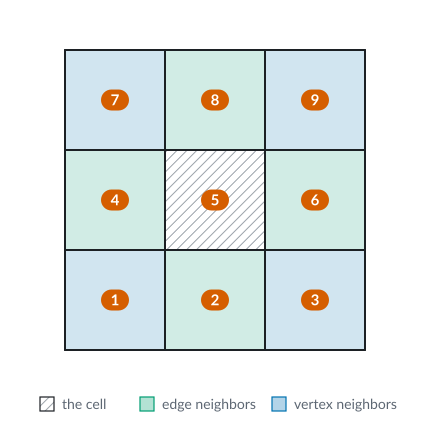
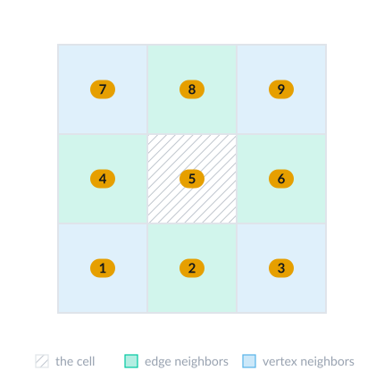
Neighborhood queries go through getneighborhood. Passing a CellIndex returns all neighboring cells, regardless of how they are connected:
julia> getneighborhood(topology, grid, CellIndex(5))8-element view(::Vector{Int64}, 17:24) with eltype Int64: 1 2 4 3 6 8 9 7The returned collections are lightweight AbstractVector views – treat them as read-only and collect them if an independent copy is needed.
Neighborhood of vertices, edges, and faces
Vertices, edges, and faces are addressed by a (cell id, local entity id) pair, wrapped in VertexIndex, EdgeIndex, or FaceIndex, where the local numbering is defined by the cell's reference shape (see Reference shapes). Note that vertices, edges, and faces denote entities of fixed dimension 0, 1, and 2, independent of the spatial dimension of the grid, see Entity naming. In addition, FacetIndex addresses facets, i.e. the entities separating cells: vertices in 1D, edges in 2D, and faces in 3D. Since an interior entity is part of more than one cell it has multiple valid indices, one for each cell containing it:
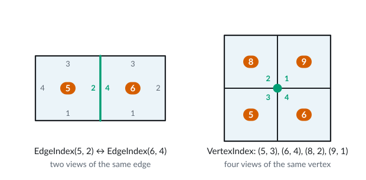
For these index types getneighborhood returns the other local views of the same entity, i.e. how the entity is addressed from the neighboring cells:
julia> getneighborhood(topology, grid, FacetIndex(5, 2))1-element view(::Vector{EdgeIndex}, 10:10) with eltype EdgeIndex: EdgeIndex((6, 4))julia> getneighborhood(topology, grid, VertexIndex(5, 3))3-element view(::Vector{VertexIndex}, 1:3) with eltype VertexIndex: VertexIndex((6, 4)) VertexIndex((8, 2)) VertexIndex((9, 1))With the optional argument include_self set to true the queried entity itself is also included, thus giving all equivalent representations:
julia> getneighborhood(topology, grid, VertexIndex(5, 3), true)4-element view(::Vector{VertexIndex}, 1:4) with eltype VertexIndex: VertexIndex((5, 3)) VertexIndex((6, 4)) VertexIndex((8, 2)) VertexIndex((9, 1))The facet skeleton
A loop over all facets of all cells visits interior facets twice: once from each of the two cells sharing it. facetskeleton instead returns an iterable with every unique facet of the grid exactly once, where interior facets are represented by the cell with the lowest cell id:
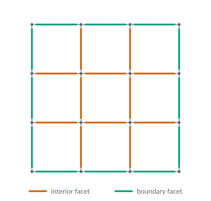
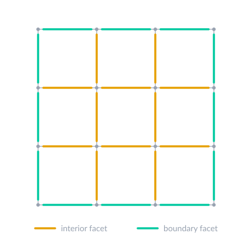
julia> skeleton = facetskeleton(topology, grid);julia> length(skeleton)24For this grid the skeleton contains 24 unique facets (12 interior and 12 on the boundary), compared to the 9 × 4 = 36 cell-local facets. The skeleton is useful when something should be computed once per facet, e.g. integrals over material interfaces. For integrating jump and average terms over interior facets, as needed in discontinuous Galerkin methods, the InterfaceIterator (which uses the topology internally) is more convenient, see the Discontinuous Galerkin heat equation tutorial.
Mixed reference dimensions
Grids mixing cells of different reference dimension are supported, as long as the highest reference dimension equals the spatial dimension. As an example, consider a Line cell attached to the right edge of a quadrilateral:
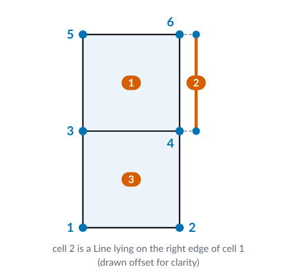
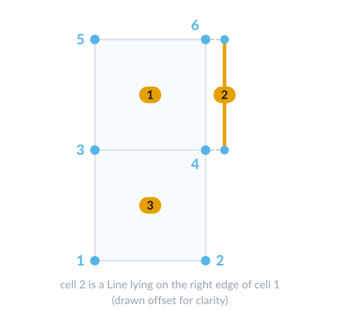
julia> nodes = Node.(Vec.([(0.0, 0.0), (1.0, 0.0), (0.0, 1.0), (1.0, 1.0), (0.0, 2.0), (1.0, 2.0)]));julia> cells = [ Quadrilateral((3, 4, 6, 5)), # top quadrilateral (cell 1) Line((4, 6)), # line on the right edge of cell 1 (cell 2) Quadrilateral((1, 2, 4, 3)), # bottom quadrilateral (cell 3) ];julia> mixed_grid = Grid(cells, nodes);julia> mixed_topology = ExclusiveTopology(mixed_grid);The neighborhood is classified by the shared entity just as before, so the line cell is an edge neighbor of cell 1. For FacetIndex queries the facet dimension is resolved from the reference dimension of the indexed cell: the facets of the quadrilateral cell 1 are edges, and querying them finds the neighboring quadrilateral as well as the line cell:
julia> getneighborhood(mixed_topology, mixed_grid, FacetIndex(1, 1)) # bottom edge1-element view(::Vector{EdgeIndex}, 1:1) with eltype EdgeIndex: EdgeIndex((3, 3))julia> getneighborhood(mixed_topology, mixed_grid, FacetIndex(1, 2)) # right edge1-element view(::Vector{EdgeIndex}, 3:3) with eltype EdgeIndex: EdgeIndex((2, 1))To distinguish bulk neighbors from embedded ones, Ferrite.entity_dim and Ferrite.entity_codim are useful: an edge of a quadrilateral (reference dimension 2) has co-dimension 2 - 1 = 1, whereas the edge making up the whole line cell (reference dimension 1) has co-dimension 0:
julia> Ferrite.entity_codim(mixed_grid, EdgeIndex(3, 3)) # facet of a bulk cell1julia> Ferrite.entity_codim(mixed_grid, EdgeIndex(2, 1)) # embedded cell itself0This can be used to dispatch on the type of coupling, e.g.:
for facet_nr in 1:4, neighbor in getneighborhood(mixed_topology, mixed_grid, FacetIndex(1, facet_nr)) if Ferrite.entity_codim(mixed_grid, neighbor) == 1 # standard facet-to-facet coupling with another bulk cell (here cell 3) elseif Ferrite.entity_codim(mixed_grid, neighbor) == 0 # coupling with an embedded cell (here the line cell 2) endendNote that these relations are not symmetric: seen from the line cell the facets are vertices, so the same facet-based code cannot be reused from the embedded side:
julia> getneighborhood(mixed_topology, mixed_grid, FacetIndex(2, 1))2-element view(::Vector{VertexIndex}, 1:2) with eltype VertexIndex: VertexIndex((1, 2)) VertexIndex((3, 3))Finally, the bulk operations facetskeleton (and thereby InterfaceIterator) do not support grids with mixed reference dimensions, since they assume a common facet dimension across the whole grid.
Vertex stars
vertex_star_stencils computes the star of every vertex in the grid: the vertex itself and all vertices connected to it by an edge. The stencil of a specific vertex is then extracted with getstencil:
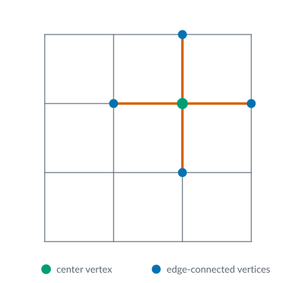
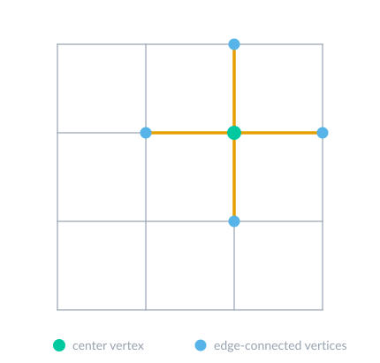
julia> stencils = vertex_star_stencils(topology, grid);julia> getstencil(stencils, grid, VertexIndex(5, 3))12-element view(::Vector{VertexIndex}, 73:84) with eltype VertexIndex: VertexIndex((5, 3)) VertexIndex((5, 2)) VertexIndex((5, 4)) VertexIndex((6, 4)) VertexIndex((6, 1)) VertexIndex((6, 3)) VertexIndex((8, 2)) VertexIndex((8, 1)) VertexIndex((8, 3)) VertexIndex((9, 1)) VertexIndex((9, 2)) VertexIndex((9, 4))The vertices in the star are given by their local views from the cells containing the center vertex. Vertex stars are useful for node-based operations, e.g. constructing stencils for finite-difference-like approximations.
Topology-aware boundary sets
The topology is also used by addboundaryfacetset! and addboundaryvertexset!. In contrast to addfacetset! and addvertexset!, which consider all entities for which the passed predicate holds, these restrict the search to entities on the domain boundary, i.e. entities of facets without neighbors:
julia> addboundaryfacetset!(grid, topology, "east", x -> x[1] ≈ 1.0);julia> getfacetset(grid, "east")OrderedCollections.OrderedSet{FacetIndex} with 3 elements: FacetIndex((3, 2)) FacetIndex((6, 2)) FacetIndex((9, 2))